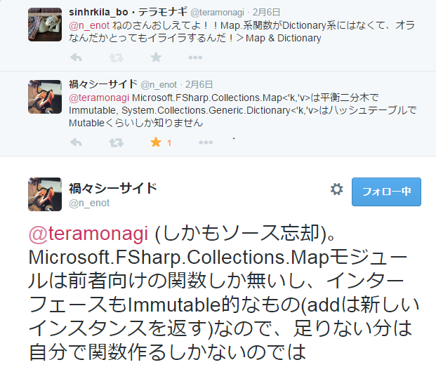

type Hoge =
| A = 1
| B = 2
Full name: Document.Hoge
| A = 1
| B = 2
Full name: Document.Hoge
Hoge.A: Hoge = 1
Hoge.B: Hoge = 2
type Moge =
| M1 of Hoge
| M2
Full name: Document.Moge
| M1 of Hoge
| M2
Full name: Document.Moge
union case Moge.M1: Hoge -> Moge
union case Moge.M2: Moge
val length : type_name:System.Type -> int
Full name: Document.length
Full name: Document.length
val type_name : System.Type
namespace Microsoft.FSharp.Reflection
type FSharpType =
static member GetExceptionFields : exceptionType:Type * ?bindingFlags:BindingFlags -> PropertyInfo []
static member GetFunctionElements : functionType:Type -> Type * Type
static member GetRecordFields : recordType:Type * ?bindingFlags:BindingFlags -> PropertyInfo []
static member GetTupleElements : tupleType:Type -> Type []
static member GetUnionCases : unionType:Type * ?bindingFlags:BindingFlags -> UnionCaseInfo []
static member IsExceptionRepresentation : exceptionType:Type * ?bindingFlags:BindingFlags -> bool
static member IsFunction : typ:Type -> bool
static member IsModule : typ:Type -> bool
static member IsRecord : typ:Type * ?bindingFlags:BindingFlags -> bool
static member IsTuple : typ:Type -> bool
...
Full name: Microsoft.FSharp.Reflection.FSharpType
static member GetExceptionFields : exceptionType:Type * ?bindingFlags:BindingFlags -> PropertyInfo []
static member GetFunctionElements : functionType:Type -> Type * Type
static member GetRecordFields : recordType:Type * ?bindingFlags:BindingFlags -> PropertyInfo []
static member GetTupleElements : tupleType:Type -> Type []
static member GetUnionCases : unionType:Type * ?bindingFlags:BindingFlags -> UnionCaseInfo []
static member IsExceptionRepresentation : exceptionType:Type * ?bindingFlags:BindingFlags -> bool
static member IsFunction : typ:Type -> bool
static member IsModule : typ:Type -> bool
static member IsRecord : typ:Type * ?bindingFlags:BindingFlags -> bool
static member IsTuple : typ:Type -> bool
...
Full name: Microsoft.FSharp.Reflection.FSharpType
static member Reflection.FSharpType.GetUnionCases : unionType:System.Type * ?bindingFlags:System.Reflection.BindingFlags -> Reflection.UnionCaseInfo []
module Array
from Microsoft.FSharp.Collections
from Microsoft.FSharp.Collections
val map : mapping:('T -> 'U) -> array:'T [] -> 'U []
Full name: Microsoft.FSharp.Collections.Array.map
Full name: Microsoft.FSharp.Collections.Array.map
val u : Reflection.UnionCaseInfo
val field : System.Reflection.PropertyInfo []
member Reflection.UnionCaseInfo.GetFields : unit -> System.Reflection.PropertyInfo []
val length : array:'T [] -> int
Full name: Microsoft.FSharp.Collections.Array.length
Full name: Microsoft.FSharp.Collections.Array.length
namespace System
type Enum =
member CompareTo : target:obj -> int
member Equals : obj:obj -> bool
member GetHashCode : unit -> int
member GetTypeCode : unit -> TypeCode
member HasFlag : flag:Enum -> bool
member ToString : unit -> string + 3 overloads
static member Format : enumType:Type * value:obj * format:string -> string
static member GetName : enumType:Type * value:obj -> string
static member GetNames : enumType:Type -> string[]
static member GetUnderlyingType : enumType:Type -> Type
...
Full name: System.Enum
member CompareTo : target:obj -> int
member Equals : obj:obj -> bool
member GetHashCode : unit -> int
member GetTypeCode : unit -> TypeCode
member HasFlag : flag:Enum -> bool
member ToString : unit -> string + 3 overloads
static member Format : enumType:Type * value:obj * format:string -> string
static member GetName : enumType:Type * value:obj -> string
static member GetNames : enumType:Type -> string[]
static member GetUnderlyingType : enumType:Type -> Type
...
Full name: System.Enum
System.Enum.GetValues(enumType: System.Type) : System.Array
module Seq
from Microsoft.FSharp.Collections
from Microsoft.FSharp.Collections
val cast : source:System.Collections.IEnumerable -> seq<'T>
Full name: Microsoft.FSharp.Collections.Seq.cast
Full name: Microsoft.FSharp.Collections.Seq.cast
val length : source:seq<'T> -> int
Full name: Microsoft.FSharp.Collections.Seq.length
Full name: Microsoft.FSharp.Collections.Seq.length
val sum : array:'T [] -> 'T (requires member ( + ) and member get_Zero)
Full name: Microsoft.FSharp.Collections.Array.sum
Full name: Microsoft.FSharp.Collections.Array.sum
val typeof<'T> : System.Type
Full name: Microsoft.FSharp.Core.Operators.typeof
Full name: Microsoft.FSharp.Core.Operators.typeof
val lhs : Hoge
val rhs : Hoge
val A : Hoge
val x : Hoge
Full name: Document.x
Full name: Document.x
val x : int []
Full name: Document.x
Full name: Document.x
val maxX : int
Full name: Document.maxX
Full name: Document.maxX
val max : array:'T [] -> 'T (requires comparison)
Full name: Microsoft.FSharp.Collections.Array.max
Full name: Microsoft.FSharp.Collections.Array.max
val filter : predicate:('T -> bool) -> array:'T [] -> 'T []
Full name: Microsoft.FSharp.Collections.Array.filter
Full name: Microsoft.FSharp.Collections.Array.filter
val i : int
val mapi : mapping:(int -> 'T -> 'U) -> array:'T [] -> 'U []
Full name: Microsoft.FSharp.Collections.Array.mapi
Full name: Microsoft.FSharp.Collections.Array.mapi
val y : int
val elements : System.Array
Full name: Document.elements
Full name: Document.elements
val map : mapping:('T -> 'U) -> source:seq<'T> -> seq<'U>
Full name: Microsoft.FSharp.Collections.Seq.map
Full name: Microsoft.FSharp.Collections.Seq.map
val o : obj
val unbox : value:obj -> 'T
Full name: Microsoft.FSharp.Core.Operators.unbox
Full name: Microsoft.FSharp.Core.Operators.unbox
F#談話室(17)
よくわからないことを質問したら、談話室の神々が助けてくれた件
@teramonagi
Who am I?
- @teramonagi
- /R/F#/C++/Ruby/VBA
- .NETわからない勢
- 「あれ読めこれやれ」的なアドバイスを強く求めます！！！
- このスライドもF#で作ってます ⇒ FsReveal
内容
- よくわからなかったことをF#談話室で質問したら見事に解決していただきました！
- 以下、質問(Q)とその回答(A)が続きます
[Q1]判別共有体の要素数が欲しい
- 以下のコードだと、
Moge |> sizeとかやると3ってなってほしい - どう書いたらいいの、僕…
1: 2: 3: 4: 5: 6: |
type Hoge = | A = 1 | B = 2 type Moge = | M1 of Hoge | M2 |
[A1]Reflection使え
Microsoft.FSharp.Reflectionを使うと良いとのことでした- 今回のケースだと以下でOK、汎用的にしたければ再帰でがんばれ
1: 2: 3: 4: 5: 6: 7: 8: 9: 10: 11: 12: |
let length type_name = Reflection.FSharpType.GetUnionCases(type_name) |> Array.map (fun u -> let field = u.GetFields() match Array.length field with | 0 -> 1 | _ -> System.Enum.GetValues(field.[0].PropertyType) |> Seq.cast<Hoge> |> Seq.length ) |> Array.sum //3と表示される typeof<Moge> |> length |
[Q2]オーバーロードし過ぎ…
- 格好つけようとしたら
intが足せなくなった！！！ - ちゃんとモジュール(名前空間？)なんかを使えってこと？
1: 2: 3: 4: 5: 6: 7: 8: 9: |
type Hoge = | A | B let (+) (lhs: Hoge) (rhs: Hoge) = match (lhs, rhs) with | (A, _) -> A | (_, _) -> B //動く B + B //この式に必要な型は Hoge ですが、ここでは次の型が指定されています int let x = 2 + 3 |
[A2]moduleちゃんと分けるか、inline使え
- 基本、moduleや名前空間でちゃんと分けよう
- コンパイルするならinline付けておけばコンパイル時に展開されるのでOK
[Q3]配列の最大要素のインデックスを取りたい
- indexと値をzipしてmaxby, mapi
- いい書き方が知りたい
1: 2: 3: |
let x = [|1; 5; 2; 3|] let maxX = x |> Array.max [|0..(Array.length x - 1)|] |> Array.filter (fun i -> x.[i] = maxX) |
[A3]mapi使うといいかも？
- こんなんどうでしょう
1: 2: 3: |
x |> Array.mapi (fun i y -> if y=maxX then i else -1) |> Array.filter ((<>) -1) |
[Q4]System.Array is 何…
Enum.GetValuesの結果がSystem.Arrayになる- F#の型に持っていくのが辛い
1: 2: 3: 4: 5: 6: 7: |
type Hoge = | A = 0 | B = 1 let elements = System.Enum.GetValues(typeof<Hoge>) elements |> Seq.cast |> Seq.map (fun o -> o |> unbox<Hoge>) |
[A4] 普通にcastしましょう
- ダウンキャスト
:?>かSeq.cast<Type>を使おう
1: 2: |
elements |> Seq.cast<Hoge> elements :?> Hoge [] |
[Q5]MapとDictionaryの違いがよくわかんねぇよ…(1)
- KeyValue関数使ったり使わなかったり...
- .NET周りのお勉強は何をやったらいいの…
[A5]MapとDictionaryの違いがよくわかんねぇよ…(2)
- これを読めばいいのでは…？

[A5]MapとDictionaryの違いがよくわかんねぇよ…(3)
- ありがとう、ねのさん！！！

(おまけ)数式も書ける in FsReveal
\(f(x) = x^3 + \frac{1}{3} x^2\)